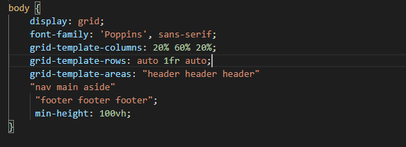
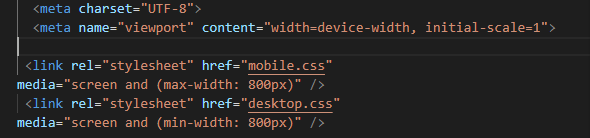

My Site Report
When I first started coding this website, it was not easy; for example, I didn't know how to make the html and CSS work together to create something that looked really good. It is difficult to achieve the desired result if you want to do everything with html. Html is used to build the page, and CSS is used to design it. For this website, I used the Grid layout, which we began using at the beginning of the year. I used a display grid for my website because it is simpler than the old one and allows you to do whatever you want with it. As an example:
When you open the website, you will notice that I have used a display grid for my website. This is used in everything you see on the website. For example, on my website, I have three different sections: header, navigation, main, sidebar, and footer, and if you look at the website, you will be able to see all of the different sections. If you look at the grid template column line, you'll notice that I've given 20% to the navigation, 60% to the main content of the page, and 20% more to my website's sidebar.
In this screenshot, you can see that I have created two different CSS files, and when a user opens the website on a computer, they will go to the web version, which has a minimum width of 800px, and when they open it on a mobile phone, they will go to the mobile version.